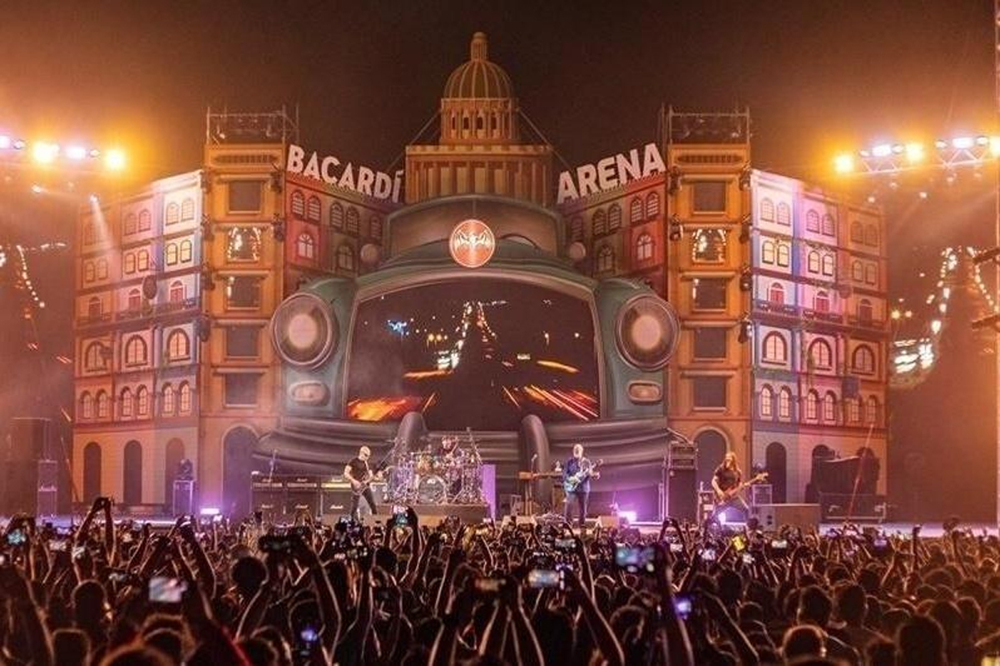

-
Sunburn Festival
Sunburn Festival is one of the largest electronic dance music (EDM) festivals in Asia, attracting top international DJs and music artists. It takes place in Candolim Beach, Goa and features three days of non-stop music, dance, and revelry. The festival also includes food stalls, art installations, and other interactive experiences.
Location: Candolim Beach, Goa, India
-
NH7 Weekender
NH7 Weekender is a multi-city festival that showcases a mix of Indian and international alternative music acts, including indie rock, metal, and electronica. The festival takes place across several cities in India and features a lineup of emerging and established artists.
Location: Multiple cities in India
 -
Magnetic Fields Festival
Magnetic Fields Festival is set in the stunning Rajasthan desert and is a boutique music festival that features a diverse lineup of Indian and international artists. The festival combines music, art, food, and other cultural experiences to create a truly unique and immersive experience.
Location: Alsisar Mahal, Shekhawati, Rajasthan, India

-
Ziro Festival of Music
Ziro Festival of Music is held in the remote town of Ziro in Arunachal Pradesh and showcases independent music and musicians from across India. The festival is held in a scenic and natural setting surrounded by rice paddies and is a celebration of music, art, and culture.
Location: Ziro, Arunachal Pradesh, India